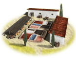
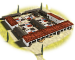

RTR: Imperium Surrectum
RTR: Imperium SurrectumDye Industry
3 levels, each replacing the one before it — you upgrade in place rather than building alongside.
Dyes Collectors (Urban) → Dye Works (Urban) → Dye Exports (Urban)
Levels at a glance
| Level | Cost | Build time | Minimum settlement | Upgrades to | Level | Cost | Build time | Minimum settlement | Upgrades to | ||
|---|---|---|---|---|---|---|---|---|---|---|---|
| Dyes Collectors (Urban) | 1,000 | 2 | large town | Dye Works (Urban) |  | Dye Works (Urban) | 2,500 | 3 | city | Dye Exports (Urban) | |
 | Dye Exports (Urban) | 8,000 | 6 | large city | — |
Costs in denarii, build time in turns.
Dyes Collectors (Urban)

Basic collection of natural dye ingredients, supporting the simple but essential dyeing of fabrics.
In a world where clothing whispers power and colours proclaim rank, the dye industry stands as the hidden heart of wealth and prestige.
The sources of dyes are as varied as the resulting colours.
In the mines where metal is mined wonderous red cinnabar can sometimes be found, while in the western deserts of Egypt as well as a few lucky islands alum is gathered, needed to better fix dye to fabric. From plants like woad and weld, yielding cool blues and bright yellows, to kermes bugs crushed for rich reds, collectors need to traverse wild lands to pluck out nature’s brightest hues. Each ingredient is precious, though none quite so revered as the infamous murex snail, which leaves behind an aroma as powerful as the dye itself.
Every hue tells a tale: madder red for the battle-tested, saffron yellow for the affluent, and deep indigo for the mysterious. Some colours are so rare that only the noblest can wear them without fearing a swift rebuke!
| Cost | 1,000 denarii | Build time | 2 turns | Minimum settlement | large town | Upgrades to | Dye Works (Urban) |
Requirements — all of these must hold before this level can be built.
- any faction
- Local Market at Local Barter or above is built here
- the region does not have the hidden resource
nobuild(nobuilding) - the region has the dyes resource
- no building tagged
urban_exploitsis built or queued here (no_other_urban_exploits) - Government Building
Show the condition as the game files write it
factions { all, } and building_present_min_level market trader and nobuilding and resource dyes and no_other_urban_exploits and requires_gov
What it does
- +1 trade income
- +2 taxable income
Dye Works (Urban)

A large dye industry is flourishing, meeting the demands of the wealthy and influential.
If there’s colour in the world, it’s found here, in a place where cloth becomes the canvas of status. From the shores of far-off lands to the fields and mines of neighbouring regions, skilled collectors gather the vibrant ingredients that turn humble fabric into symbols of status.
But gathering the goods for the dye trade isn’t for the faint-hearted or weak of stomach.
The Dye Works represent a leap in dye-making sophistication, offering an entire rainbow of shades to those with coin to spare. Warriors prize madder red for its bold, fierce hue, while aristocrats favour saffron yellow for its sunny warmth. Workers here have mastered exotic dyes, each with its own lore, and prices high enough to make merchants smile.
Even the gods might envy the colours created within these walls, a vivid testament to craftsmanship, rarity, and luxury.
| Cost | 2,500 denarii | Build time | 3 turns | Minimum settlement | city | Upgrades to | Dye Exports (Urban) |
Requirements — all of these must hold before this level can be built.
- any faction
- Local Market at Local Market or above is built here
- the region does not have the hidden resource
nobuild(nobuilding) - the region has the dyes resource
- Government Building
Show the condition as the game files write it
factions { all, } and building_present_min_level market market and nobuilding and resource dyes and requires_gov
What it does
- +2 trade income
- +4 taxable income
Dye Exports (Urban)

A grand centre of dye exports, crafting refined hues for those with taste, and wealth, to match.
The pinnacle of colour-crafting mastery, where dyes are spun from myth and luxury drips from every thread.
In the extensive Dyeworks, skilled artisans practice their secrets of hue and saturation, conjuring shades so rich they almost glow in the dark. The hands and arms of the workers are stained with the rare and expensive ingredients they work with that go one to dye the garments of the richest of the rich. From indian indigo that could dye the ocean itself, to the finest armenian kermes and sinopean earth. This is where colour ascends to artistry; the hues here are rich, rare, and speak of fortunes exchanged. Every garment dyed here adds to the factory’s fame, as traders from distant lands covet the colours found nowhere else. The result is nothing short of a spectacle, and the wealth that pours into this region is nearly as precious as the dyes themselves.
| Cost | 8,000 denarii | Build time | 6 turns | Minimum settlement | large city |
Requirements — all of these must hold before this level can be built.
- any faction
- Local Market at Forum or above is built here
- the region does not have the hidden resource
nobuild(nobuilding) - the region has the dyes resource
- Direct Rule or Homeland
- anywhere in your empire does not have the hidden resource
dyes_supply_built(not_dyes_supply_built)
Show the condition as the game files write it
factions { all, } and building_present_min_level market forum and nobuilding and resource dyes and direct_govs and not_dyes_supply_built
What it does
- +3 trade income
- +6 taxable income
- (Faction) Textile industries (tier 2-3) gain +10% trade, on tier 3 textiles 'regular' dyes can stack with purple dye
What the shorthands in those conditions stand for (5)
| Shorthand | Stands for | Shorthand | Stands for | Shorthand | Stands for | Shorthand | Stands for |
|---|---|---|---|---|---|---|---|
direct_govs | building_present governmentC or building_present governmentD | no_other_urban_exploits | no_building_tagged urban_exploits queued | nobuilding | not hidden_resource nobuild | not_dyes_supply_built | not hidden_resource dyes_supply_built factionwide |
requires_gov | building_present governmentA or building_present governmentB or building_present governmentC or building_present governmentD or not is_player |